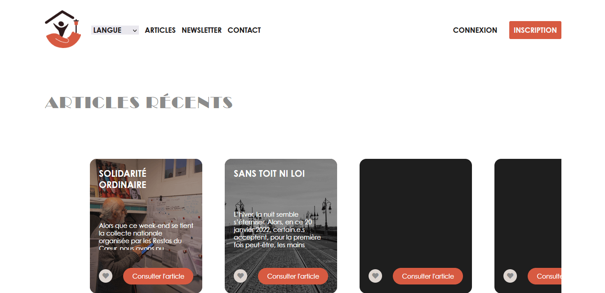
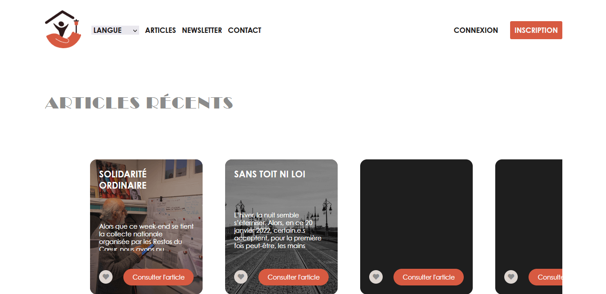

UNLOCKED - JEU MOBILE
- CHECK PREVIEW & DOWNLOAD -
Projet jeu vidéo portant sur l'accessibilité et le handiplay. Nous avons crée un jeu mobile de type escape game. J'ai été chargé du design et illustrations.
Outils : Illustrator, Photoshop, Unity, Trello
Equipe de 5


 
